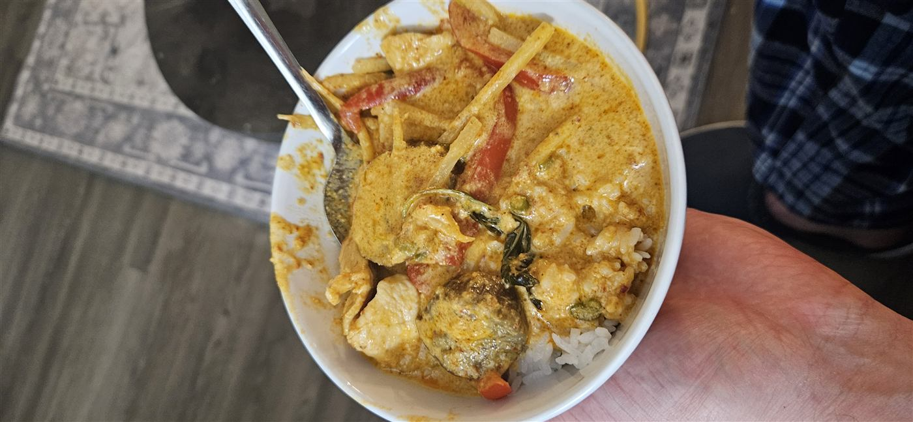

Good food.
Step by step.
Recipes, ingredients, and photos from my kitchen.

Thai · Chicken · About 1 hour
Thai red chicken curry
Coconut milk, eggplant, bamboo shoots, and Thai chilies. Follow the whole process in photos.
Open the recipe ↗